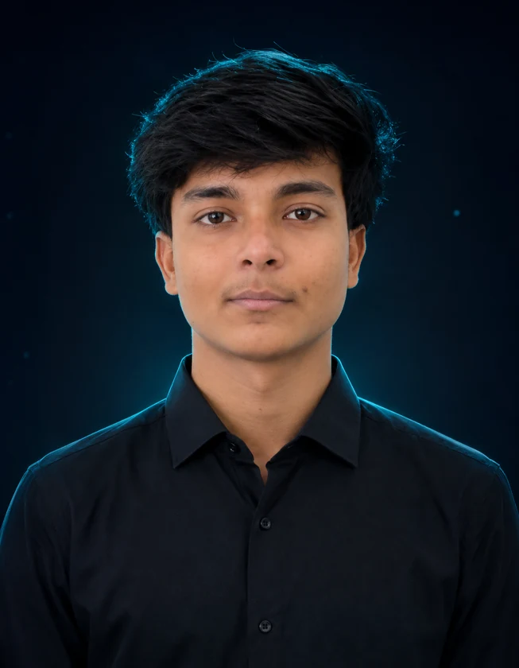

Leadership / Founder profile
Shaik Mohamed
Founder & Managing Director, SARUNEX Security
Shaik Mohamed founded SARUNEX Security with an interest in cybersecurity, threat intelligence and helping organizations understand and reduce practical security risks. His focus includes security assessments, vulnerability testing, digital risk protection and security awareness.